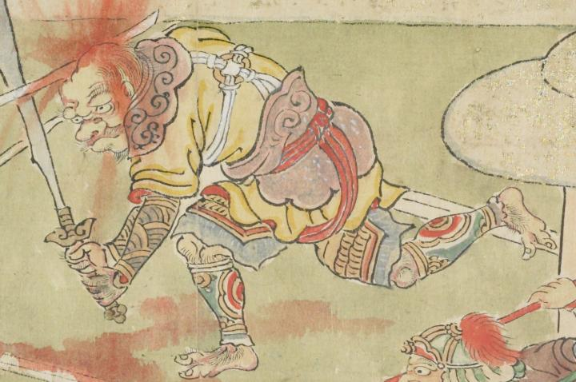

頭を切られる鬼。口をへの字に曲げ、大量の血液を出している。黄色い衣服を身にまとい、鎧を身につけている。
出典：親書誌：U426_nichibunken_0079：酒天童子絵巻；シュテンドウジエマキ／日付：2006／資源識別子：U426_nichibunken_0079_0013_0002
Copyright (c)2010- International Research Center for Japanese Studies, Kyoto, Japan. All rights reserved.